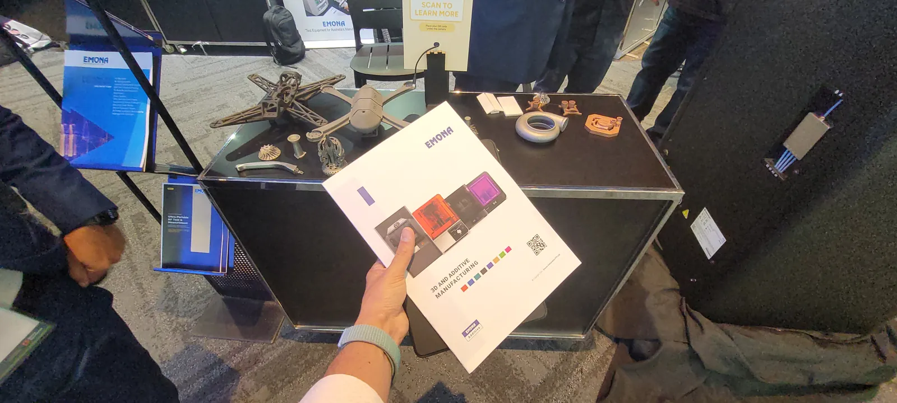
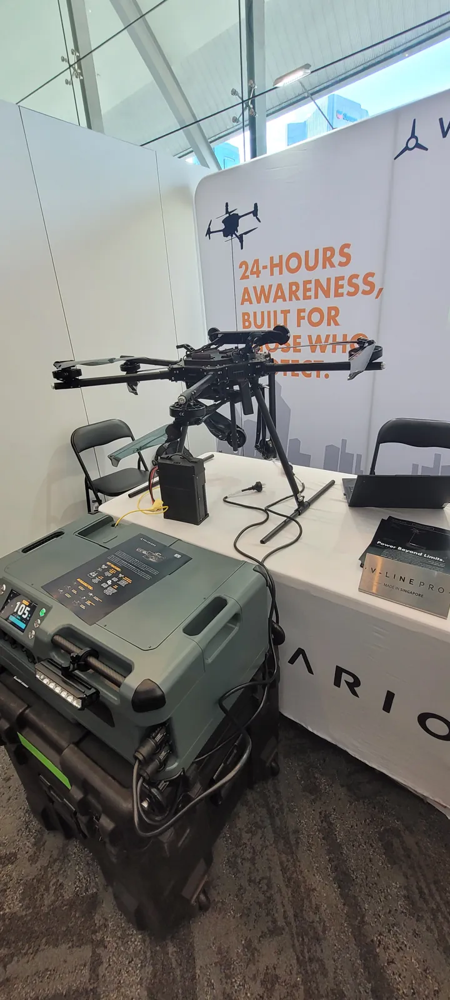
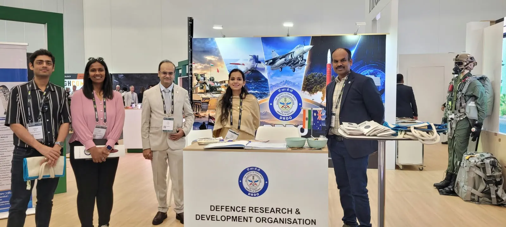
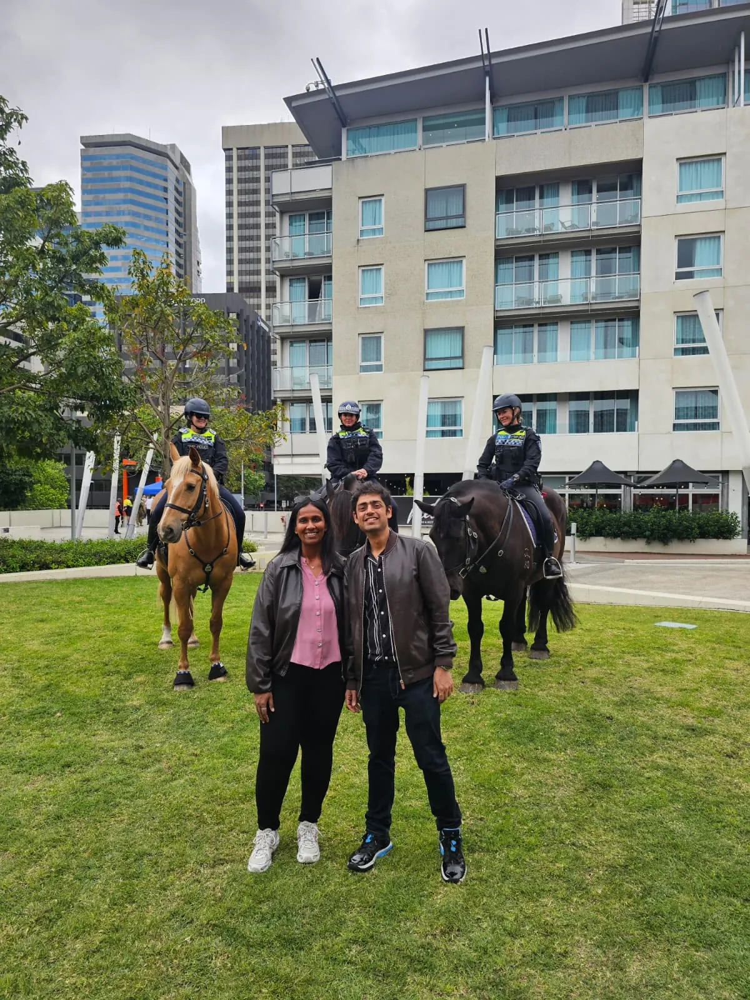

<section id="tutorials" class="research">
  <div class="container">

    <div class="section-title">
      <h2></h2>
      <p>Blog: Land Forces 2026, Perth</p>
    </div>

    <hr>
    <h4>Land Forces 2026, Perth: Defence Industry, Drones and New Connections</h4>
    <hr>

    <div class="whole-wrap">
      <div class="container">
        <div class="section-top-border">

          <p style="text-align: justify; font-style: italic;">
            In early October 2026, <strong>Alice James</strong> and I travelled to Perth for
            <strong>Land Forces 2026</strong>, the International Land Defence Exposition. As
            researchers at Macquarie University's Advanced Drone Systems Research Centre (ADSRC),
            it was a chance to see where defence industry is heading in autonomy, uncrewed
            systems and advanced manufacturing, and to meet the people building it.
          </p>

          <div style="display: flex; flex-wrap: wrap; gap: 10px; justify-content: center; margin: 20px 0;">
            
          </div>

          <h5><i class="icofont-rocket"></i> On the exhibition floor</h5>
          <p style="text-align: justify;">
            Two days on the floor meant a lot of conversations. For us, the most useful were the
            practical ones: how teams are using <strong>additive manufacturing</strong> to turn
            around drone airframes and structural parts quickly, what <strong>power and
            endurance</strong> solutions look like for larger multirotors, and how international
            research organisations are approaching collaboration with Australian partners.
            Those themes sit close to our own work on aerial autonomy, payload transport and
            mid-air energy handoff.
          </p>
          <div style="display: flex; flex-wrap: wrap; gap: 10px; justify-content: center; margin: 20px 0;">
            
            
            
          </div>

          <h5><i class="icofont-users-social"></i> Meeting the community</h5>
          <p style="text-align: justify;">
            Events like this are mostly about people. We caught up with researchers, industry
            exhibitors and visiting delegations, including a conversation at the
            <strong>Defence Research and Development Organisation (DRDO)</strong> stand, and came
            home with new ideas for collaborations and for how we describe our research to
            industry. Thank you to everyone who took the time to talk with us.
          </p>

          <h5><i class="icofont-travelling"></i> A little Perth</h5>
          <p style="text-align: justify;">
            We also made time to see the city: an evening at Kings Park with the skyline over
            the Swan River, and an unexpected meeting with some very patient mounted police
            horses near the conference precinct.
          </p>
          <div style="display: flex; flex-wrap: wrap; gap: 10px; justify-content: center; margin: 20px 0;">
            
            
          </div>

          <p style="text-align: justify;">
            If you'd like to talk about drones, autonomy or collaboration,
            <a href="mailto:avishkar.seth@mq.edu.au">get in touch</a>. More of our year is on the
            <a href="highlights_2026.html">Highlights 2026</a> page.
          </p>

        </div>
      </div>
    </div>

  </div>
</section>
